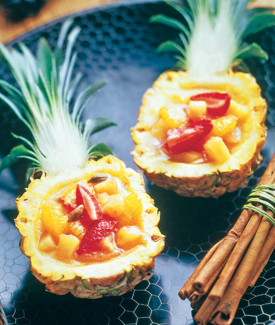

Recetas con fresas , caseras y fáciles - De Rechupete
Recetas de rechupete Recetas de cocina caseras y fáciles
Recetas de Postres y dulces Pescado y marisco Pollo y otras carnes Arroz Pasta Ensaladas y verduras Tapas y aperitivos Sopas, guisos y legumbres Pan, masas y rebozados Patatas, salsas y guarniciones Para ocasiones especiales Bebidas, cócteles y licores Aprende a cocinar Recetas de pollo Actualidad gastronómica Recetas fáciles y baratasInicio » fresas
Recetas con fresas 26 recetas
Pudin cremoso de fresas y plátano
⭐ 4.5 25 min 0.9€/pers.Cómo hacer un delicioso pudin cremoso de fresas y plátano en formato individual o vasitos. Postre con éxito asegurado, fácil y barato.
Plátano cocina española
Tarta de fresas y crema pastelera
⭐ 3.4 40 min 1.2€/pers.Cómo preparar una tarta súper sencilla, tarta de crema pastelera con fresas en hojaldre. Receta perfecta para aquellos que empiezan en la cocina, deliciosa
fresas cocina francesa
Tarta de queso fácil. Receta sin horno
⭐ 3.5 25 min 0.5€/pers.Cómo hacer una tarta de queso cremosa, sin horno y que triunfa en todas las casas. Receta sencilla y barata que sale siempre.
queso cocina española
Mini cheesecakes o tartas de queso individuales súper fáciles
⭐ 3.7 15 min 0.7€/pers.Cómo hacer mini cheesecakes o mini tartas de queso individuales. Unos postres de queso en vasito. Receta individual para disfrutar de la tarta de queso más famosa y fácil del mundo.
queso cocina americana
Tarta de queso americana o New York Cheesecake
⭐ 3.5 90 min 0.8€/pers.New York Cheesecake, esta tarta de queso fácil y famosa donde las haya. Un postre con historia en la gran manzana que puede servirse sola o con salsa de arándanos y que se ha convertido en uno de los postres favoritos de los americanos y de medio mundo. Preparación paso a paso, fotografía y trucos.
queso cocina americana
Clafoutis o tarta de cerezas
⭐ 3.4 40 min 0.6€/pers.Cómo hacer una tarta de cerezas o clafoutis de cerezas. Receta de postre, una tarta francesa especial para el verano. Paso a paso con fotos y video
cocina francesa
Smoothie de fresa
⭐ 4.7 15 min 0.6€/pers.Cómo hacer un smoothie de fresas y plátano. Receta de un batido de frutas con un lácteo perfecto para los más pequeños de casa. Paso a paso, fotos y vídeo.
cocina americana
Tarta o tartaletas de frutas
⭐ 4.5 120 min 0.5€/pers.Cómo hacer tartaletas o tarta de frutas frescas. Postre delicioso y fácil con fruta de temporada, base de masa quebrada y relleno de crema pastelera. Paso a paso con fotos y consejos para que te salga perfecto.
cocina francesa
Tarta de queso sin horno
⭐ 4 300 min 0.8€/pers.Cómo hacer una tarta de queso sin horno. Receta muy fácil, barata y muy cremosa. Elaborada con galletas, queso mascarpone y fresas.
queso cocina americana
Tarta de fresas
⭐ 3.9 25 min 0.65€/pers.Cómo preparar una tarta de fresas fácil, rápida y económica. Una receta súper sencilla pues no necesita, sin horno. Preparación paso a paso y fotos.
cocina española
Mousse de fresas
⭐ 2.8 20 min 0.5€/pers.Cómo preparar la mousse más fácil del mundo mundial, con fresas. Postre rápido y una forma estupenda de comer fresas. Receta dulce para los más niños.
cocina francesa
Tarta de fresas con yogurt
⭐ 3.1 15 min 0.5€/pers.Cómo hacer una tarta de fresas sin horno. Postre rápido, fácil y barato. Preparación paso a paso, fotos, vídeo y consejos para que te salga perfecto.
cocina española
Clafoutis de fresas
⭐ 4.8 35 min 0.8€/pers.Cómo hacer clafoutis de fresas. Postre francés en formato individual con un sabor similar a las crepes. Receta fácil, sabrosa y barata. Paso a paso con fotos y consejos.
cocina francesa
Torrijas al horno con azúcar y canela
⭐ 2.7 20 min 0.9€/pers.Cómo preparar este postre de Semana Santa de manera light, fácil y sin manchar la cocina. Hechas en el horno evitamos freírlas y conseguimos unas torrijas más ligeras. Preparación paso a paso y fotos
leche cocina española
Tostadas francesas
⭐ 2.8 20 min 0.55€/pers.Cómo preparar unas auténticas tostadas francesas. Uno de los desayunos más famosos del mundo. Una versión anglosajona de nuestras queridas torrijas. Preparación paso a paso y fotos.
pan cocina francesa
Brazo de gitano de chocolate
⭐ 4.8 90 min 0.9€/pers.Cómo preparar un brazo de gitano delicioso, de chocolate y con un relleno lleno de fresas. Un postre especial para un cumpleaños del peque de casa
chocolate cocina francesa
Tiramisú de fresas
⭐ 3.4 20 min 1.3€/pers.Cómo preparar un postre con fresas rápido, sencillo y fácil. Un postre de temporada que triunfará, copa de tiramisú de fresas. Paso a paso y vídeo.
cocina italiana
Pudin de queso con frutos rojos
⭐ 5 60 min 0.5€/pers.Cómo preparar un pudin o budín de queso, contraste dulce con el ácido de los frutos rojos. Un postre muy sabroso y lleno de color. Paso a paso y trucos.
queso cocina inglesa
Mousse de Fresa y M&M’s
⭐ 20 min 0.55€/pers.Cómo preparar una mousse de fresas y chocolate, una combinación difícil de batir. Un postre divertido, colorista y muy rico. Preparación paso a paso y fotos.
Fresas con yogurt griego al caramelo
⭐ 4.3 10 min 0.8€/pers.Cómo hacer fresas con yogur y caramelo. Receta de un postre rápido, sencillo y fácil, de los que triunfarán con fresas de temporada. Paso a paso con fotos.
cocina española
Tarta con frutas de Primavera
⭐ 3.3 40 min 0.8€/pers.Postre con frutas exquisito y delicado. Un sabor muy parecido al Strudel pero más suave y con vuestras frutas preferidas. Preparación paso a paso, fotografía y truquillos.
manzana cocina española
Crêpes de chocolate
⭐ 4.3 30 min 0.7€/pers.Estos crepes o filloas de chocolate acompañas con fresas son un postre típico de la cocina gallega y del Carnaval o Entroido. Preparación paso a paso, fotografías y trucos.
chocolate cocina francesa cocina gallega
Delicias de manzana. Receta de manzanas con crema Franchipán
⭐ 2 60 min 0.9€/pers.Postre de manzanas con crema Franchipán, un delicioso trozo con todo el sabor a manzana, cremoso y dulce. Receta perfecta para los amantes de las manzanas. Preparación paso a paso, fotos y consejos.
manzana cocina francesa
Ensalada de espinacas con requesón y frutas
⭐ 4 10 min 1.2€/pers.Una receta apropiada para estos días de tanto calor y que mezcla sabores exquisitos, que pueden ser fresas como alguna otra fruta que os apetezca, mango, trozos de manzana, pera o melocotón. Preparación paso a paso y foto.
espinaca cocina española
Ensalada de queso fresco con fresas
⭐ 20 min 1.2€/pers.Ensalada de fresas sobre una cama de queso fresco, jamón ibérico de bellota 100%, con una vinagreta de miel, una de esas ensaladas, que entran por la vista igual de bien que por la boca. Preparación paso a paso y foto.
cocina española
Ensalada de bacalao
⭐ 4 30 min 1.9€/pers.Una ensalada muy completa, llena de color por sus frutos rojos y con un toque tostado de los frutos secos que mezcla con uno de mis peces preferidos: el bacalao. Preparación paso a paso
bacalao cocina española
⭐ Recetas populares
Tarta de queso fácil. Receta sin horno
Tarta de queso americana o New York Cheesecake
Mini cheesecakes o tartas de queso individuales súper fáciles
Hoy se habla de
Bacalao Tarta de queso Arroz con leche Tiramisú Torrijas Pollo en pepitoria Sukalki Almejas a la marinera Merluza en salsa verde Leche fritaRecibe un email semanal con las nuevas recetas de rechupete.
SuscríbeteRecetas
Recetas por orden alfabético Postres y dulces Carnes, pollo y otras aves Sopas, guisos y legumbres Arroz Pasta Pescado y marisco Panes, masas y rebozados Ensaladas y verduras Patatas, salsas y guarniciones Tapas y aperitivos Bebidas, cócteles y licores Para ocasiones especiales Recetas por temática Recetas fáciles Cómo hacerAprende a cocinar
Cursos de cocina Imprimibles Ingredientes y alimentos Utensilios y menaje de cocina Productos de temporadaCultura gastronómica
Actualidad gastronómica Libros de cocinaLas mejores recetas
Albóndigas en salsa. Receta fácil al estilo de mi abuela Cómo hacer churros Cordero al horno o asado Estofado de ternera Guacamole mexicano fácil Lasaña de carne Masa de pizza italiana Pollo al curry Fideuá de marisco y pescadoDe temporada
Alimentos de temporada en Febrero Bacalao a la portuguesa Espinacas a la crema o gratinadas Lubina al horno Risotto de setas Arroz chaufa Cómo hacer el mojito perfectoRecetas baratas
Pollo asado fácil Tortilla de patatas Lentejas con chorizo Arroz con pollo Bizcocho de yogurt Brownie de chocolate Tortitas o pancakes caseros Hummus o crema de garbanzos 830.000 213.000 94.000 78.000 28.000 23.000 © 2009-2021 Recetas de rechupete - Todos los derechos reservados Términos de uso · Política de privacidad · Política de cookies
Diseñado por PIENSA en PIXELS · Cloud hosting con StackScale